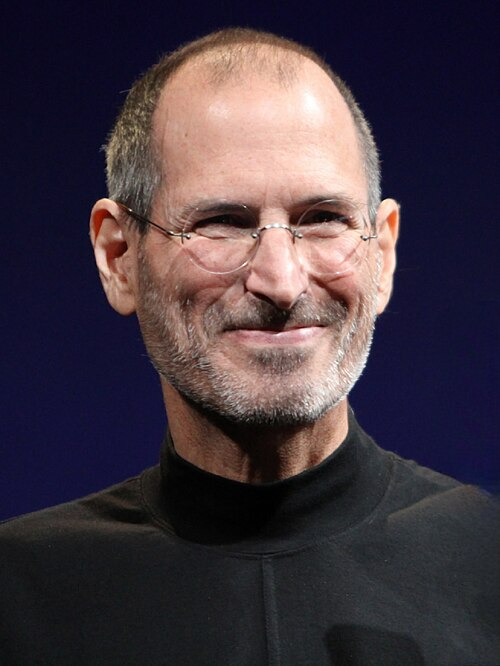
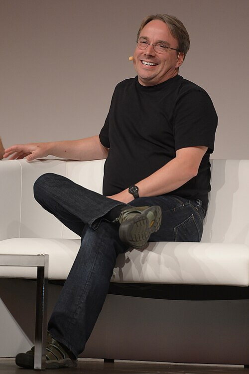

Personalidades da tecnologia
Bill Gates

William Henry Gates III, conhecido como Bill Gates, é um empresário e programador norte-americano. Em 1975, fundou a Microsoft com Paul Allen, ajudando a popularizar o computador pessoal e o software para uso doméstico e profissional.
Enquanto estudavam em Harvard, os jovens desenvolveram um interpretador da linguagem BASIC para um dos primeiros computadores pessoais a serem lançado nos Estados Unidos—o Altair 8800. Após um modesto sucesso na comercialização deste produto, Gates e Allen fundaram a Microsoft, uma das primeiras empresas no mundo focadas exclusivamente no mercado de programas para computadores pessoais ou PCs. Sede da Microsoft em Seattle Foi fundada em 1975 por Bill Gates, então com 19 anos, em parceria com Paul Allen. O primeiro produto comercial da empresa foi o Altair BASIC para o MITS Altair (Micro Instrumentation Tlemetry System), produzido no mesmo ano. Em 1980 a empresa deu um passo decisivo ao adquirir da Seattle Computer Products o sistema operativo 86-DOS. Em 1998 Gates promoveu Steve Ballmer, um amigo de longa data, ao posto de presidente da Microsoft e publicamente passou a ter uma participação menos ativa nos processos decisórios da empresa.[14] Em 2 de março de 2005 foi condecorado com o título de Comandante Cavaleiro do Império Britânico.[15] Bill Gates anunciou em 16 de junho de 2006 que iria deixar progressivamente o cargo de diretor da Microsoft até 2008, para poder se ocupar da fundação de caridade Bill & Melinda Gates Foundation. Em 27 de junho de 2008 Bill Gates retirou-se definitivamente da Microsoft para se dedicar inteiramente aos seus projetos filantrópicos.[16] Mesmo tendo anunciado a sua aposentadoria da Microsoft, na prática Bill Gates continuará dedicando 20% do seu tempo (um dia por semana) para assuntos relativos à Microsoft. Ele continua a atuar como chairman da Microsoft e conselheiro no desenvolvimento de projetos-chave. Ele somente não estará nas decisões do dia-a-dia e dedicará mais tempo e energia ao seu trabalho relacionado à saúde e educação na Fundação Bill & Melinda Gates.
Steve Jobs

Steven Paul Jobs foi um inventor, empresário e magnata norte-americano do setor da informática. Notabilizou-se como cofundador, presidente e diretor-executivo da Apple Inc. e por revolucionar seis indústrias: computadores pessoais, filmes de animação, música, telefones, tablets e publicações digitais. Além de sua ligação com a Apple, foi diretor-executivo da empresa de animação por computação gráfica Pixar, e acionista individual máximo da The Walt Disney Company.[8] Morreu no dia 5 de outubro de 2011, aos 56 anos de idade, devido a um câncer pancreático.[2] Currículo de Steve Jobs[9] "Estou procurando um lugar que necessite de muitas reformas e consertos, mas que tenha fundações sólidas. Estou disposto a demolir paredes, construir pontes e acender fogueiras. Tenho uma grande experiência, um monte de energia, um pouco dessa coisa de ‘visão’ e não tenho medo de começar do zero". No final da década de 1970, Jobs, em parceria com Steve Wozniak e Mike Markkula, entre outros, desenvolveu e comercializou uma das primeiras linhas de computadores pessoais de sucesso, a série Apple II.[6] No começo da década de 1980, ele estava entre os primeiros a perceber o potencial comercial da interface gráfica do usuário guiada pelo mouse, o que levou à criação do Macintosh.[10] Após perder uma disputa de poder com a mesa diretora em 1985, Jobs foi demitido da Apple e fundou a NeXT, uma companhia de desenvolvimento de plataformas direcionadas aos mercados de educação superior e administração. A compra da NeXT pela Apple em 1996 levou Jobs de volta à companhia que ele ajudara a fundar, sendo então seu CEO de 1997 a 2011, ano em que anunciou sua renúncia ao cargo, recomendando Tim Cook como sucessor.[11] Em 2015, houve o lançamento do filme biográfico Steve Jobs, que conta parte da vida do cofundador da Apple Inc., remetendo a lançamentos feitos no período entre 1984 e 1998, como o Apple Macintosh, NeXT Computer e o iMac G3. A produção teve sua estreia, em 5 de setembro, no Tellurid Film Festival. A atriz Kate Winslet ganhou o Globo de Ouro e o BAFTA como melhor atriz-coadjuvante por seu papel, além de ter sido nomeada também para o Óscar na mesma categoria. O ator Michael Fassbender também concorreu ao Óscar de Melhor Ator, por interpretar Jobs. O filme ganhou o Globo de Ouro de melhor roteiro, escrito por Aaron Sorkin.[12][13] Primeiros anos Nascimento Steven Paul Jobs nasceu em São Francisco, filho de Joanne Schieble Jandali Simpson, nascida em Wisconsin, e de Abdulfattah Jandali, membro de uma proeminente família síria proprietária de poços de petróleo, empresas e propriedades agrícolas. O casal se conheceu em meados da década de 1950 na Universidade de Wisconsin. Os pais de Joanne, alemães católicos, eram contra o relacionamento.[14] Em 1954, o casal viajou escondido para a Síria. Jandali apresentou sua família a Joanne, que ficou hospedada na casa do namorado, mas a família dele não aceitou Joanne, que era americana, e eles queriam que o filho seguisse a tradição e se casasse com uma muçulmana. Ao voltarem para Wisconsin, Joanne se desesperou ao descobrir a gravidez e comunicou o fato a Jandali, que ficara muito assustado, mas decidido a assumir o bebê. No entanto, foram proibidos de se casarem pois as duas famílias eram contra a união. Quando descobriram o bebê, a família de Joanne e a de Jandali, por ser contra o aborto, queriam que entregassem o bebê para a adoção, ou os dois perderiam a herança da família.[14] Sem alternativas e nem como se sustentar até arrumar um emprego, Jandali voltou para a Síria, abandonou os estudos e começou a trabalhar, prometendo juntar dinheiro para tentar ter como criar o filho. Joanne viajou para São Francisco sozinha, a mando dos pais, onde ficou num abrigo, sob proteção de um médico que cuidava de mães solteiras, fazia partos e cuidava de adoções sigilosas. Os meses se passaram e Jandali não mandava notícias. Por mais que quisesse ficar com o bebê, não poderia criá-lo sem um lar e sem um pai presente. Após dar a luz em um parto sofrido, Joanne não quis entregar o bebê, e resistiu bastante até ser convencida pelo médico que era o melhor a se fazer. Mesmo depressiva, pensava no futuro do bebê, e exigiu que seu filho fosse adotado por um casal com pós-graduação universitária, pois queria um futuro brilhante para ele. Inicialmente, o bebê seria adotado por um advogado e sua esposa, que acabaram desistindo da adoção após o parto, pois queriam uma menina.[15] Após a recusa do primeiro casal, Joanne criou uma vaga esperança de ficar com o bebê e ainda aguardava notícias de Jandali, mas as semanas se passaram e um novo casal procurou o abrigo. Sem ter como esperar, já que seus pais foram buscá-la a força, o bebê foi deixado sob guarda de Paul Reinhold Jobs, mecânico e ex-membro da guarda costeira, e Clara Hagopian Jobs, filha de imigrantes armênios. Inicialmente Joanne recusou-se a deixar o abrigo com seus pais e a assinar os papéis da adoção, pois além de amar o bebê, o casal não tinha completado o segundo grau e Joanne temia um futuro miserável ao filho. O impasse só terminou após Paul assinar um compromisso de criar um fundo para enviar o menino à faculdade; assim, a jovem foi embora com os pais, triste e infeliz, esperançosa para reencontrar Jandali. Após meses, Jandali procurou Joanne, mas a família dela impediu a aproximação. Com isso, Joanne saiu do país e foi estudar em um internato. Os anos se passaram, e após estarem com suas carreiras consolidadas e independentes, ambos se reencontraram. Depois de um tempo de brigas e acusações, acabaram não resistindo à antiga paixão e, mesmo sem a aprovação das famílias, mesmo perdendo a herança, casaram-se no civil e no religioso. Juntos tiveram uma menina, Mona Simpson, e passam a investigar o destino do filho dado para adoção.[15][16][17][18] Juventude Em 1955, o casal Jobs adotou um menino recém-nascido, a quem batizam de Steven Paul Jobs[19] em um loteamento em Mountain View ao sul de Palo Alto.[19] Em seu novo lar, Paul Jobs mergulhou no passatempo de reformar e vender carros usados. As primeiras lições sobre design foram aprendidas durante o tempo em que Steve passava na garagem com seu pai, que tentava, infrutiferamente, ensinar sobre os princípios da arte da mecânica automóvel. Dois anos depois, o casal adotou uma menina recém-nascida, a quem batizam de Patty Jobs. Clara Jobs havia sido casada com um capitão do exército, que faleceu durante a guerra. Antes, porém, teve uma gravidez ectópica (fora do útero), sofrendo um aborto espontâneo e não podendo mais engravidar. Encontrou em Paul um marido carinhoso e compreensivo, que abdicou de ter filhos biológicos e, junto da esposa, compartilhou seu sonho de adoção.[19][20][13] A atmosfera tecnológica adquirida por Palo Alto a partir da década de 1960 inspirou o jovem Steve a se aprofundar no campo da eletrônica, descoberta durante as horas passadas na garagem de casa.[21] Durante o nono ano do ensino fundamental, Jobs começou a visitar a garagem do engenheiro Larry Lang, que o introduziu no Clube do Explorador da Hewlett-Packard, um grupo de estudantes que reuniam-se semanalmente no refeitório da empresa.[22] Em pouco tempo, Jobs conseguiu um emprego na empresa[23] e começou a se aprofundar em atividades culturais como literatura e música. Na eletrônica, passaram a frequentar as aulas dadas por John McCollum, durante o último ano do ensino médio. Nesse curso conheceu Stephen "Steve" Wozniak, cujo irmão mais novo era colega de Jobs na equipe de natação.[24] A amizade entre os dois Steves mostrou-se frutífera desde o início. Ambos eram apaixonados por eletrônica e por "pregar peças".[25] Um dos marcos do espírito "brincalhão" da dupla foi a criação de uma versão de um dispositivo que permitia a realização de chamadas de longa distância de graça, a partir da emissão de um som com frequência de 2 600 hertz chamada de "Caixa Azul" ou Blue Box. O som com essa frequência servia como "chave de encaminhamento de chamada da rede telefónica". A dupla de amigos começou a vender o equipamento a 150 dólares. A ideia para a construção do equipamento surgiu de uma reportagem da revista Esquire intitulada "Segredos da pequena Caixa Azul". "No meio dessa longa reportagem, tive de ligar para meu melhor amigo, Steve Jobs, e ler partes dela para ele", lembrou Wozniak.[26] A reportagem revelava que outros tons serviam como sinais de frequência única dentro da banda para encaminhar chamadas e que podiam ser encontrados numa edição da revista "Bell System Technical Journal". Numa tarde de domingo em setembro de 1971, Jobs e Wozniak invadiram a biblioteca do SLAC (Stanford Linear Accelerator Center) para obter a publicação.[26] Inicialmente a Caixa Azul era usada apenas para diversão. É folclórica a história em que Wozniak, fingindo ser Henry Kissinger ligou para o Vaticano para tentar falar com o Papa João Paulo II. A brincadeira tornou-se negócio após Jobs perceber o potencial do equipamento. O preço de custo para cada unidade era de quarenta dólares e o equipamento seria vendido a 150 dólares. Adotando apelidos como Berkeley Blue (Wozniak) e Oaf Tobark (Jobs) a dupla começou a vender os equipamentos. Nas demonstrações, ligavam para o hotel Ritz em Londres, ou para um serviço de piadas na Austrália. Os negócios com a Caixa Azul terminaram quando a dupla foi roubada por um cliente armado numa pizzaria. O empreendimento seria considerado por Jobs e Wozniak como um marco que permitiu a criação da Apple, pouco tempo depois. "Se não fosse pelas Caixas Azuis, não teria existido uma Apple. Tenho certeza absoluta disso. Woz e eu aprendemos a trabalhar juntos, e ganhamos a confiança de que podíamos resolver problemas técnicos e pôr efetivamente algo em produção.", afirmou Jobs.[27][28][13
Linus Torvalds

Linus Benedict Torvalds é um engenheiro de software, nascido na Finlândia e naturalizado estado-unidense em 2010, criador, e por muito tempo o desenvolvedor mais importante do núcleo Linux, sendo utilizado em importantes sistemas Linux, Android e Chrome OS. É também o criador do Git, sistema de controle de versão amplamente utilizado, e o aplicativo para planejamento e registro de mergulho, Subsurface.[3] Junto ao médico Shinya Yamanaka, foi honrado pela Academia de Tecnologia da Finlândia, em 2012, com o Prêmio de Tecnologia do Milênio “em reconhecimento à sua criação de um novo núcleo de sistema operacional para computadores, que levou ao extensivamente utilizado, núcleo Linux”.[4] Torvalds também notoriamente recebeu os prêmios: Pioneiro da Computação da IEEE Computer Society,[5] e o IEEE Masaru Ibuka Consumer Electronics Award, patrocinado pela Sony. Biografia Torvalds nasceu em Helsínquia, na Finlândia. É filho dos jornalistas Anna e Nils Torvalds,[6] e neto do estatístico Leo Törnqvist e do poeta Ole Torvalds. Seus pais eram radicais do campus da Universidade de Helsínquia, na década de 1960. Sua família pertence à minoria de língua sueca (5,5 % da população da Finlândia). Seu interesse por computadores começou com um Commodore VIC-20. Nessa época, ele fica conhecido por ter escrito um clone do Pac-Man chamado Cool Man.[carece de fontes] Linus Torvalds é casado com Tove Torvalds (Monni, de nascimento) — hexacampeã nacional de karatê na Finlândia — a qual ele conheceu no outono de 1993. Linus passava exercícios introdutórios no laboratório de informática para os alunos, e solicitou aos participantes do curso que lhe enviassem um e-mail como teste, no qual ela o convidou para saírem em um primeiro encontro. Mais tarde, Linus e Tove se casaram e tiveram três filhas: Patricia Miranda (nascida em 1996), Daniela Yolanda (nascida em 1998), e Celeste Amanda (nascida em 2000), das quais duas nasceram nos Estados Unidos da América. Linus usa suas datas de nascimento (em hexadecimal) como aceitáveis números mágicos na chamada de reinicialização do núcleo (reboot). Linus define-se como sendo “completamente ateísta religioso”, adicionando: “acredito que as pessoas parecem pensar que a religião traz moral e apreciação a natureza. Penso que esta afasta de ambos. Dando as pessoas a desculpa para dizer: ‘Oh, a natureza foi apenas criada’. E assim, o ato da criação é visto como algo miraculoso. Eu aprecio o fato que: ‘Uau, é incrível que algo assim primeiramente tenha acontecido’”. Mais tarde comentou que, enquanto na Europa, religião é basicamente uma questão pessoal, nos Estados Unidos, ela se torna algo bastante politizado. Discutindo a questão da separação entre Estado e Igreja, Torvalds disse: “É um tanto irônico que em tantos países europeus, exista, na verdade um tipo de ligação legal entre o Estado e a religião do Estado”. Em 2010, Torvalds tornou-se cidadão estado-unidense, e se registrou para votar no país. Não é afiliado a nenhum partido político do país, acrescentando: “Em parte tenho demasiado orgulho pessoal para querer me associar a qualquer um deles, francamente”. Carreira Torvalds frequentou a Universidade de Helsínquia, entre 1988 e 1996,[7] obtendo um Mestrado em Ciência da Computação a partir do grupo de pesquisa NODES.[8] Sua carreira acadêmica foi interrompida após seu primeiro ano de estudo universitário, quando ele se juntou ao Exército da Finlândia. Lá, ocupa o posto de Segundo Tenente, com o papel de um oficial de cálculo balístico. Em 1990, retoma seus estudos universitários e é exposto ao sistema operacional Unix pela primeira vez, através de um computador DEC MicroVAX com o SO ULTRIX. Sua Dissertação de Mestrado intitula-se Linux: um sistema operacional portátil. Entrementes, em 1983, Richard Stallman cria a ideia do Sistema Operacional GNU, juntamente com a criação do Projeto GNU (que começou o seu desenvolvimento em janeiro de 1984). O Projeto GNU cresceu bastante a ponto de se fazer necessária a criação de uma fundação que desse apoio ao Projeto GNU, que se chamou Free Software Foundation (FSF), criada em 1985. Em 1986, Marice J. Bach publica Design of the Unix Operating System. Em 1988, Linus foi admitido na Universidade de Helsinki. No mesmo ano, Andy Tanenbaum traz a público o SO MINIX, um derivativo do Unix para fins didáticos que rodava em computadores pessoais (PCs). No fim dos anos 1980, Linus toma contato com os PCs. Em 1990, Torvalds começa a aprender a linguagem de programação C em seus estudos. Em 1991, Linus compra um PC com um processador Intel 80386. Em 5 de janeiro de 1991, ele compra um Intel 80386-IBM PC antes de receber sua cópia MINIX, que, por sua vez, lhe permitiu começar a trabalhar no que se tornaria o Linux. Com 21 anos, sendo cinco já de experiência em programação (em C), toma contato com o SO Unix da Universidade (SunOS, atualmente Solaris) e desejava usar a versão de Tannenbaum, o Minix, no seu recém adquirido 80386. Entretanto, descontente com os recursos do Minix, especialmente em relação ao seu emulador de terminal que ele utilizaria para conectar remotamente ao Unix da universidade, começa a desenvolver seu próprio emulador de terminal que não rodaria sobre o Minix, mas sim diretamente no hardware do PC com 80386. Esse projeto pessoal foi sendo modificado gradualmente e adquirindo características de um sistema operacional independente do Minix. Esse é o início do desenvolvimento do núcleo Linux, relatado pelo próprio Linus Torvalds em seu livro Just for fun. O projeto do Linux foi lançado em 1991 em uma famosa mensagem para a Usenet, em que divulga que estava disposto a disponibilizar o código-fonte e contar com a colaboração de outros programadores. Desde os primeiros dias de liberação do Linux à comunidade, recebe ajuda de hackers do Minix, e hoje recebe contribuições de milhares de programadores dos mais diversos locais do mundo. Em 1997, Linus Torvalds recebe os prêmios "1997 Nokia Foundation Award'y" e "Lifetime Achievement Award at Uniforum Pictures". No mesmo ano, finaliza os estudos superiores (1988-1997), tendo passado 10 anos como estudante e pesquisador na Universidade de Helsínquia, coordenando o desenvolvimento do núcleo do sistema operacional desde 1992. Torvalds trabalhou na Transmeta (fabricante de processadores para portáteis) entre 1997 e 2003, e neste ano juntou-se à Open Source Development Labs (OSDL), fundação criada para ajudar no desenvolvimento do núcleo Linux, como OSDL fellow. Contribuem para essa fundação várias grandes empresas do ramo da informática, como IBM, Oracle e HP. Torvalds possui a marca registrada "Linux" e supervisiona[9] esse uso por meio da organização sem fins lucrativos Linux International, dirigida por Jon Hall. Em entrevista a Embedded Linux Conference, Torvalds afirmou: "O Desktop realmente não abraçou completamente o mundo Linux ainda para usuários finais, mas hoje vemos muito mais empresas aderindo ao Linux para esta finalidade. Hoje vejo o desktop Linux tão desenvolvido quanto nunca. Em 25 anos, eu e meus colegas e todos os colaboradores conseguimos colocar o Linux em quase que literalmente todos os lugares, tenho pelo menos mais 25 anos para conquistar o Desktop e eu vou fazê-lo!".[10]